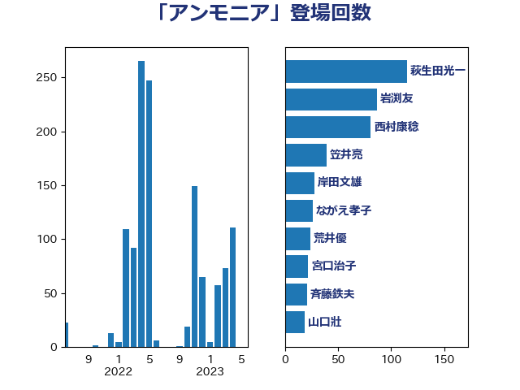

単語「アンモニア」

| 萩生田光一 | 自由民主党 | 115 回 |
| 岩渕友 | 日本共産党 | 87 回 |
| 西村康稔 | 自由民主党 | 81 回 |
| 笠井亮 | 日本共産党 | 39 回 |
| 岸田文雄 | 自由民主党 | 28 回 |
| ながえ孝子 | 無所属 | 26 回 |
| 荒井優 | 立憲民主党 | 24 回 |
| 宮口治子 | 立憲民主党 | 22 回 |
| 斉藤鉄夫 | 公明党 | 21 回 |
| 山口壯 | 自由民主党 | 19 回 |
| 西村明宏 | 自由民主党 | 18 回 |
| 清水貴之 | 日本維新の会 | 18 回 |
| 平山佐知子 | 無所属 | 17 回 |
| 大西健介 | 立憲民主党 | 16 回 |
| 青木愛 | 立憲民主党 | 14 回 |
| 石川博崇 | 公明党 | 14 回 |
| 空本誠喜 | 日本維新の会 | 13 回 |
| 山添拓 | 日本共産党 | 13 回 |
| 山崎誠 | 立憲民主党 | 13 回 |
| 山下芳生 | 日本共産党 | 13 回 |
| 近藤昭一 | 立憲民主党 | 11 回 |
| 田村智子 | 日本共産党 | 11 回 |
| 城井崇 | 立憲民主党 | 11 回 |
| 小野泰輔 | 日本維新の会 | 8 回 |
| 細田健一 | 自由民主党 | 7 回 |
| 三浦信祐 | 公明党 | 7 回 |
| 阿達雅志 | 自由民主党 | 6 回 |
| 舩後靖彦 | れいわ新選組 | 6 回 |
| 石井拓 | 自由民主党 | 6 回 |
| 青山繁晴 | 自由民主党 | 5 回 |
| 鈴木義弘 | 国民民主党 | 5 回 |
| 田嶋要 | 立憲民主党 | 5 回 |
| 片山大介 | 日本維新の会 | 5 回 |
| 浜野喜史 | 国民民主党 | 5 回 |
| 高橋千鶴子 | 日本共産党 | 4 回 |
| 舟山康江 | 国民民主党 | 4 回 |
| 篠原孝 | 立憲民主党 | 4 回 |
| 河野義博 | 公明党 | 4 回 |
| 森本真治 | 立憲民主党 | 4 回 |
| 早稲田ゆき | 立憲民主党 | 4 回 |
| 太田房江 | 自由民主党 | 4 回 |
| たがや亮 | れいわ新選組 | 4 回 |
| 鬼木誠 | 立憲民主党 | 3 回 |
| 里見隆治 | 公明党 | 3 回 |
| 遠藤良太 | 日本維新の会 | 3 回 |
| 山本佐知子 | 自由民主党 | 3 回 |
| 一谷勇一郎 | 日本維新の会 | 3 回 |
| 阿部知子 | 立憲民主党 | 2 回 |
| 鈴木英敬 | 自由民主党 | 2 回 |
| 辻元清美 | 立憲民主党 | 2 回 |
| 谷田川元 | 立憲民主党 | 2 回 |
| 石川昭政 | 自由民主党 | 2 回 |
| 石井苗子 | 日本維新の会 | 2 回 |
| 石井正弘 | 自由民主党 | 2 回 |
| 瀬戸隆一 | 自由民主党 | 2 回 |
| 渡辺猛之 | 自由民主党 | 2 回 |
| 村田享子 | 立憲民主党 | 2 回 |
| 小泉進次郎 | 自由民主党 | 2 回 |
| 前川清成 | 日本維新の会 | 2 回 |
| 中谷真一 | 自由民主党 | 2 回 |
| 高野光二郎 | 自由民主党 | 1 回 |
| 馬場雄基 | 立憲民主党 | 1 回 |
| 青柳仁士 | 日本維新の会 | 1 回 |
| 長坂康正 | 自由民主党 | 1 回 |
| 金城泰邦 | 公明党 | 1 回 |
| 輿水恵一 | 公明党 | 1 回 |
| 赤羽一嘉 | 公明党 | 1 回 |
| 西銘恒三郎 | 自由民主党 | 1 回 |
| 落合貴之 | 立憲民主党 | 1 回 |
| 茂木敏充 | 自由民主党 | 1 回 |
| 矢倉克夫 | 公明党 | 1 回 |
| 河西宏一 | 公明党 | 1 回 |
| 櫛渕万里 | れいわ新選組 | 1 回 |
| 森屋隆 | 立憲民主党 | 1 回 |
| 梶山弘志 | 自由民主党 | 1 回 |
| 林芳正 | 自由民主党 | 1 回 |
| 斎藤アレックス | 国民民主党 | 1 回 |
| 市村浩一郎 | 日本維新の会 | 1 回 |
| 工藤彰三 | 自由民主党 | 1 回 |
| 岸真紀子 | 立憲民主党 | 1 回 |
| 岡田直樹 | 自由民主党 | 1 回 |
| 岡田克也 | 立憲民主党 | 1 回 |
| 山口那津男 | 公明党 | 1 回 |
| 山口晋 | 自由民主党 | 1 回 |
| 大塚耕平 | 国民民主党 | 1 回 |
| 塩田博昭 | 公明党 | 1 回 |
| 古川元久 | 国民民主党 | 1 回 |
| 佐藤啓 | 自由民主党 | 1 回 |
| 伊藤渉 | 公明党 | 1 回 |
| 中野洋昌 | 公明党 | 1 回 |
| 中田宏 | 自由民主党 | 1 回 |
| 上杉謙太郎 | 自由民主党 | 1 回 |